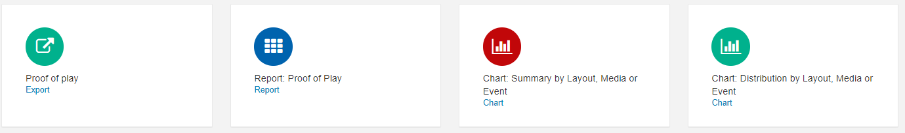
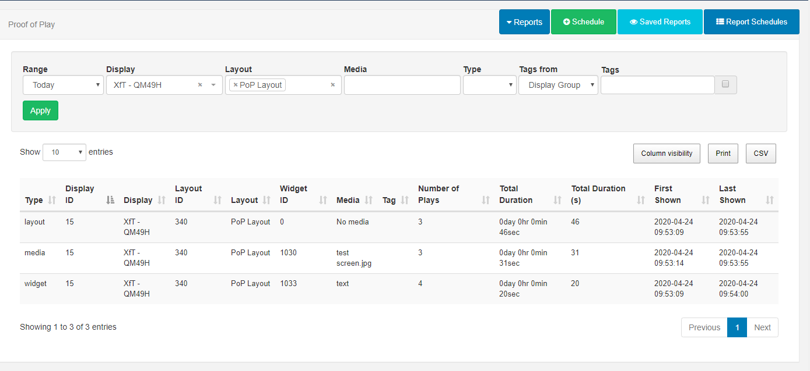
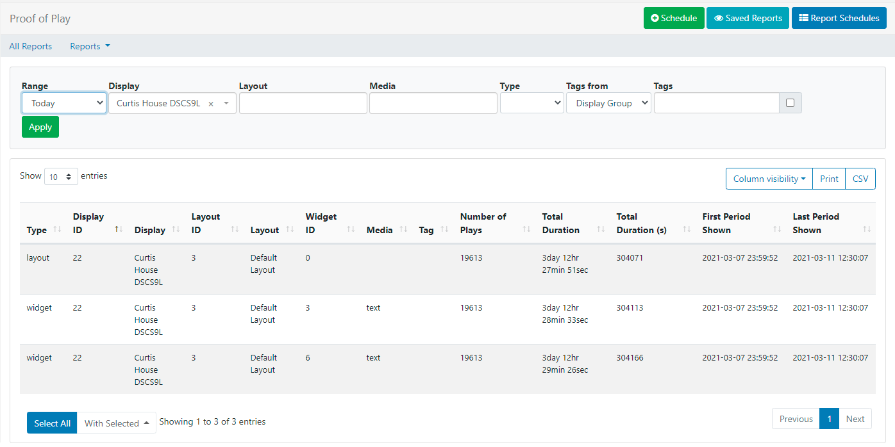

Reporting
BI Square Brand Activation provides useful metrics which are Feature enabled to allow Users to view a variety of reports within the CMS.
Reports provide a centralised area for analysis into Display performance and usage as well as detailed Proof of Play and Library usage reports. These reports can be viewed from All Reports under the Reporting section of the main CMS menu:

Display
Display Reports:
Display Statistics: Bandwidth
The CMS records the bandwidth used by each Display when connecting to XMDS for content and when reporting back Display information.
- Select the range and click on Apply. Leaving the Display field empty will show a bandwidth chart total per Display:

- Filter to just one Display and click on Apply to see each call that the Player made to XMDS in isolation:
Filtering to just one Display helps to better understand where bandwidth has been used.
Did you know…you can set a bandwidth limit per Display!
Use the All Reports button to return to the Reporting dashboard or use the Reports drop down menu to select another ‘Display’ report to view.
Time Connected/Disconnected
The CMS records all Displays/Display Groups on/offline events to provide a breakdown regarding a Displays availability.
The Time Connected Report will give a breakdown of % connected (shown in green) and % disconnected (shown in blue)
-
Select the Range and Group by Hour or Day of Month.
-
Leave the Display/Display Group field empty to view all or select Displays/Display Groups to view.
-
Click Apply

The Summary gives a further breakdown between specified dates for Displays/Display Groups and shows the number of days connected/disconnected:
Proof of Play

Each Display can collect information to provide Proof of Play Reports on what they have shown:
Layout - show all instances of a selected Layout being shown.
Media - show all instances of a selected Media file being shown.
Widget - give a report on a selected Widget contained within a Layout. (This also includes Widgets that do not contain Library media files, such as Text).
Event - If the Player supports collection from external sensors, event stats will be recorded and shown in Reports.

To collect Proof of Play reports ensure that Enable Stats Reporting has been enabled and the Aggregation level has been set on a Display Profile Setting
- Individual - statistics are recorded at the start and finish of each item individually and sent back to the CMS at each collection interval.
- Hourly - records each item once, and includes the total number of times played and the length of time played during the hour and is sent back to the CMS on the next collection interval after the hour period has expired.
- Daily - records each item once, and includes the total number of times played and the length of time played during the day and is sent back to the CMS on the next collection interval after the day has expired.
Players aggregate ‘completed records’ only, with collection made at the end of the Widgets duration so if a Widget has a duration of 3 hours, the stat will be recorded one the Widget has expired.
Proof of Play Reports:
Proof of Play: Export
View Proof of Play data exported to a CSV for selected Displays and timescales.
Proof of Play: Report
- Select a Range from the dropdown or specify your own dates and times and use the filter fields as necessary.
- Click Apply

Click on All Reports to return to the Reports Dashboard or use the Reports dropdown to select from the available Proof of Play Reports.
Chart: Summary/Distribution by Layout, Media or Event
Charts show an aggregate duration and number of plays the selected Layout, Media or Event.
- Select a Range.
- Choose the Type and use the drop down to further specify the type selected.
- Click Apply.

Use the tabs to switch between Chart and Tabular data for each Report. Tabular data can be exported as a CSV.
Library
Library Reports:
Library Usage
View Library usage for all Users of the CMS or filter to have an overview of usage by an individual User/User Group.
Schedule
Reports can be scheduled to run on a Daily, Weekly, Monthly or Yearly basis.
Chart: Distribution and Chart: Summary Reports must have the Type and the named Layout/Media/Event selected to activate the Schedule button.
-
Click on the Schedule button and complete the necessary form fields for the particular report type.
-
A PDF of the report can be emailed to users by ticking the Should an email be sent? checkbox.
Scheduled Reports can also be emailed to additional email addresses entered in the Email addresses field. Ensure that a Sending email address has been set on the Network tab in CMS Settings.
Report Schedules
- Click on the Report Schedules button to view all schedules by Owner/Type.
Each report has a row menu containing shortcuts and further actions!
Saved Reports
Click on Saved Reports to view all run reports.
Use the checkbox to only view your own run reports!
Use the row menu to view a saved report,schedule, export as a PDF or delete.
Report Schedules and Saved Reports can also be accessed directly from the CMS menu under the Reporting section.